vignettes/simplicial.Rmd
simplicial.RmdIn addition to visualizing persistent homology with topological barcodes and persistence diagrams, ggtda allows useRs to visualize the underlying simplicial complices for 2-dimensional data. This feature is particularly valuable in an educational setting, when selecting a radius and plotting a corresponding simplicial complex side-by-side with a topological barcode eases understanding of persistent homology. This vignette explains how ggtda can be used to quickly and easily plot a simplicial complex.
We first setup our environment as follows, attaching the necessary R packages (including ggtda itself!) and loading the required datasets.
library("ggtda") library("ggplot2") library("TDAstats") # to calculate persistent homology # load dataset data("unif2d") data("annulus2d")
The unif2d dataset (visualized below; left) is included with TDAstats, and a subset of 25 points from it will be used to demonstrate how individual ggtda functions work. The annulus2d dataset (visualized below; right) is included with ggtda, and will be used to demonstrate effective combination use of ggtda functions.
unif_df <- as.data.frame(unif2d[1:25, ]) colnames(unif_df) <- c("x", "y") annulus_df <- as.data.frame(annulus2d) # left panel ggplot(unif_df, aes(x = x, y = y)) + geom_point() + coord_fixed() + theme_bw() + xlab("x") + ylab("y") # right panel ggplot(annulus_df, aes(x = x, y = y)) + geom_point() + coord_fixed() + theme_bw()
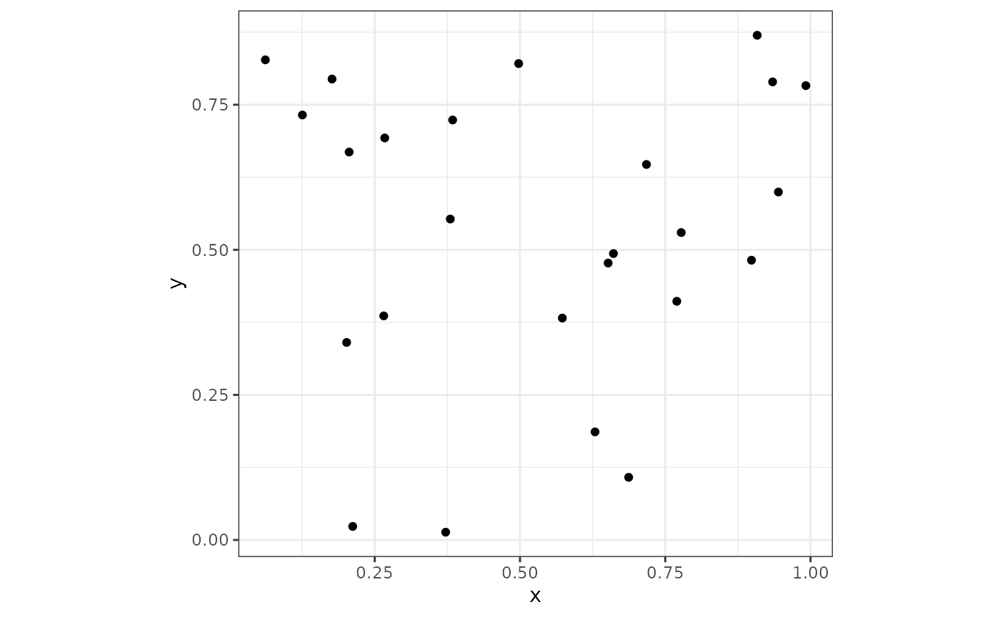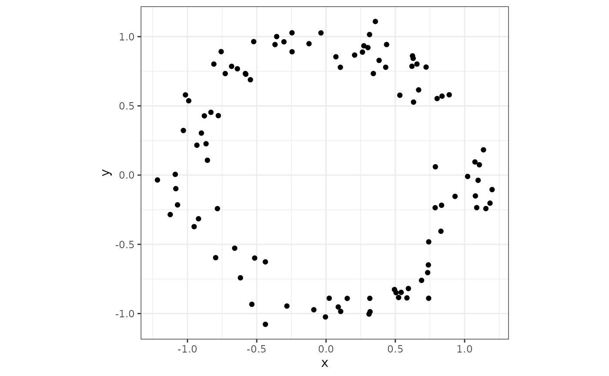
For the sake of simplicity, we will first demonstrate use of the individual simplicial complex visualization functions with a 25-point subset of unif2d. The next section will use the annulus2d dataset to show how the individual functions can work together to create effective visualizations. We will use a radius of 0.1 for the visualizations in this section. First, we explore stat_disk that, in combination with geom_point from ggplot2, will draw proximity circles surrounding each point; since 0.1 is the circle radius, any pair of points less than a distance of 0.2 units away from each other will have overlapping circles, indicating an edge should be drawn between them at this radius.
# set radius value rad_val <- 0.1 # use stat_disk to visualize simplicial complex ggplot(unif_df, aes(x = x, y = y)) + geom_point() + stat_disk(radius = rad_val, fill = "blue", alpha = 0.1) + coord_fixed() + theme_minimal()
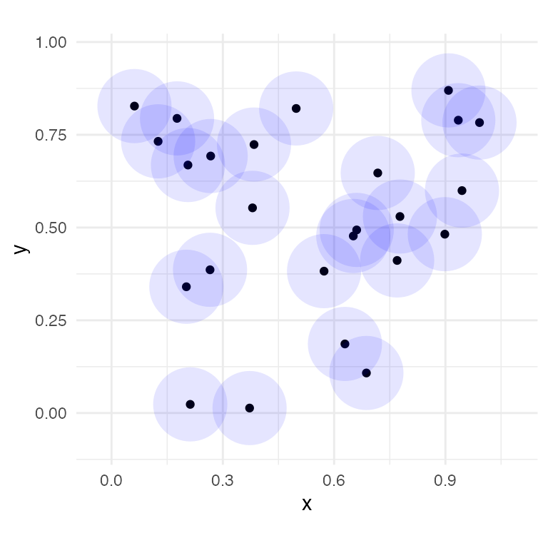
To directly visualize the edges and better visualize the features themselves, we can use the stat_vietoris0, stat_vietoris1, and stat_vietoris2 functions. stat_vietoris0 is essentially an alias for geom_point and represents the 0-dimensional components (points) of a Vietoris-Rips complex, as follows. Since the 0-skeleton of a Vietoris-Rips complex is not dependent on a specific radius (rad_val above), stat_vietoris0 requires no parameters.
ggplot(unif_df, aes(x = x, y = y)) + coord_fixed() + stat_vietoris0() + theme_minimal()
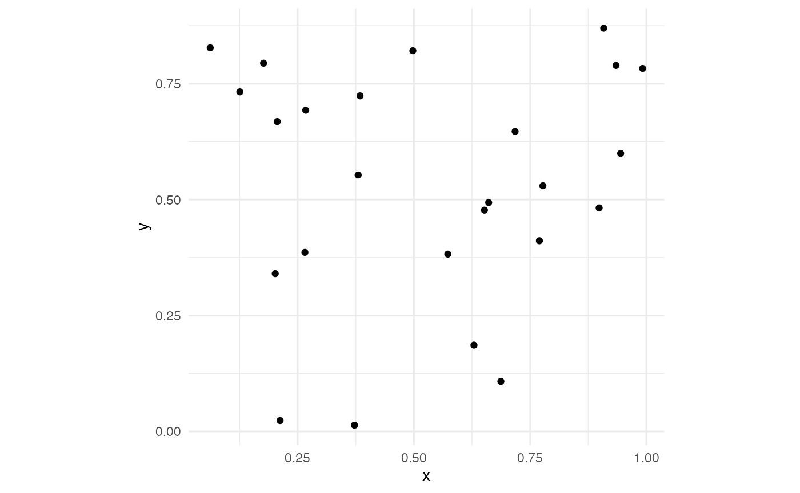
stat_vietoris1 adds excitement by plotting the 1-dimensional components (edges between point pairs with overlapping circles). Since these edges are dependent on a specific radius, we provide a value (double rad_val) for the diameter parameter. The alpha parameter is provided solely for aesthetic purposes. It is important to note that while stat_vietoris1 can be used alone (left panel below), it is often most effective when used in conjunction with stat_vietoris0 (right panel below).
# left panel: stat_vietoris1 alone ggplot(unif_df, aes(x = x, y = y)) + coord_fixed() + stat_vietoris1(diameter = rad_val * 2, alpha = 0.25) + theme_minimal() # right panel: stat_vietoris1 used with stat_vietoris0 ggplot(unif_df, aes(x = x, y = y)) + coord_fixed() + stat_vietoris0() + stat_vietoris1(diameter = rad_val * 2, alpha = 0.25) + theme_minimal()
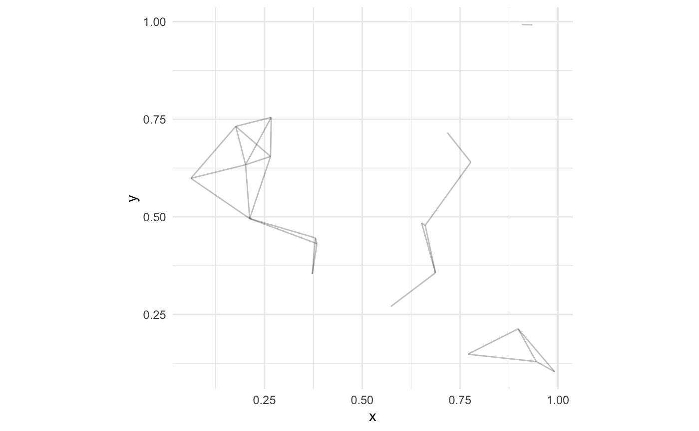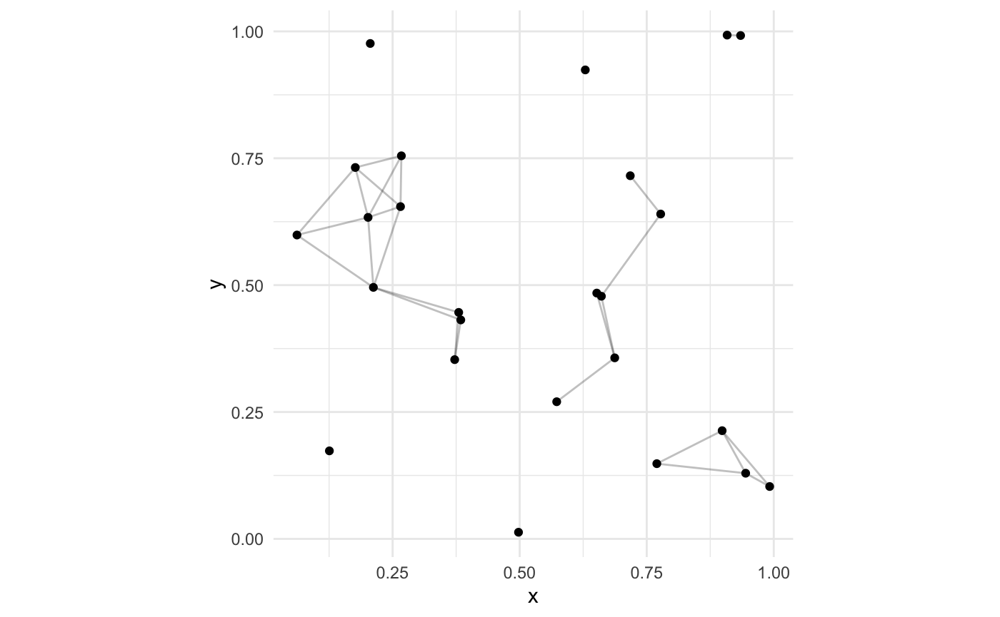
Since stat_disk sometimes requires close evaluation to determine if two points are connected, stat_vietoris1 can be used to add clarity. The radius is more intuitive to understand stat_disk, but topological barcodes and persistence diagrams are generally plotted with the diameter on the relevant axes. Accordingly, we’ve parameterized disks using radius and complexes using diameter. Note that either parameter can be passed to each stat, and correct values must be provided with care.
# combine stat_vietoris1 with stat_disk ggplot(unif_df, aes(x = x, y = y)) + stat_disk(radius = rad_val, fill = "blue", alpha = 0.1) + geom_point() + stat_vietoris1(diameter = rad_val * 2, alpha = 0.25) + theme_minimal()
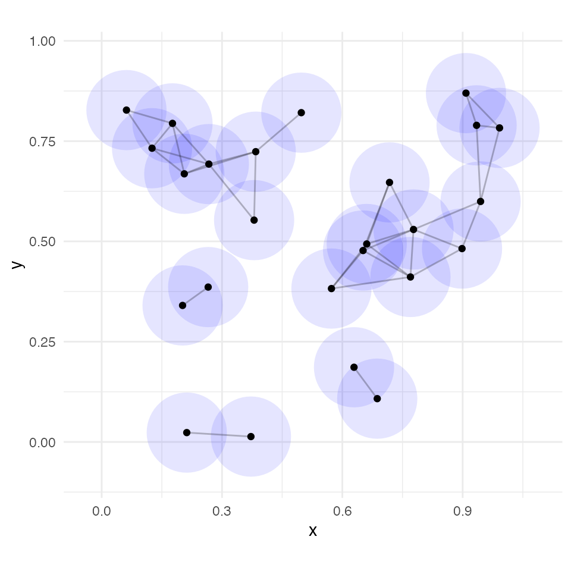
Since edges themselves do not effectively visualize the entire simplicial complex (users do not want to count edges to determine if a set of 7 points are indeed all pairwise connected), stat_vietoris2 adds the faces of the Vietoris-Rips complex to permit more intuitive interpretation. stat_vietoris2 is parameterized similarly to stat_vietoris1. As was the case with stat_vietoris1, while stat_vietoris2 can be used alone (left panel), it is most effectively used when the lower dimensional components of the Vietoris-Rips complex are also plotted (right panel). Note that the 4-point clique in the top-left corner is shaded slightly darker than the other faces.
# left panel: stat_vietoris2 alone ggplot(unif_df, aes(x = x, y = y)) + coord_fixed() + stat_vietoris2(diameter = rad_val * 2, alpha = 0.1) + theme_minimal() # right panel: stat_vietoris2 in combination with stat_vietoris1 and stat_vietoris0 ggplot(unif_df, aes(x = x, y = y)) + coord_fixed() + stat_vietoris0() + stat_vietoris1(diameter = rad_val * 2, alpha = 0.25) + stat_vietoris2(diameter = rad_val * 2, alpha = 0.15) + theme_minimal()
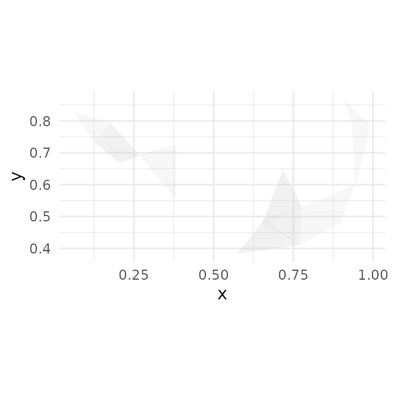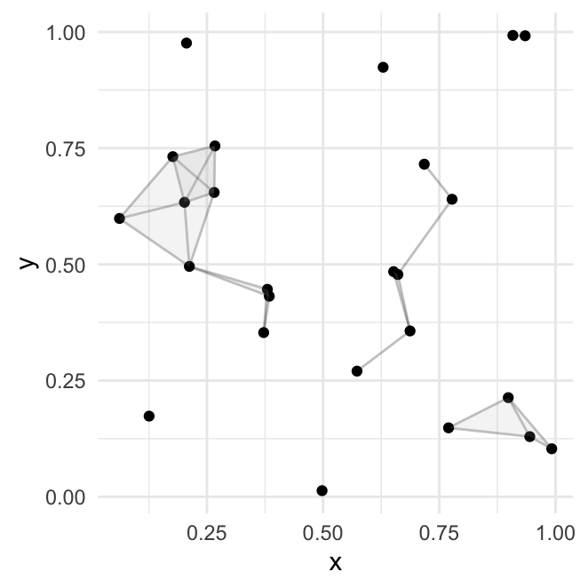
Generally, using stat_vietoris2 in combination with stat_disk creates too much overlap (figure below) and we suggest avoiding use of both in a single panel.
ggplot(unif_df, aes(x = x, y = y)) + coord_fixed() + stat_vietoris2(diameter = rad_val * 2, alpha = 0.1) + stat_disk(radius = rad_val, fill = "blue", alpha = 0.1) + theme_minimal()
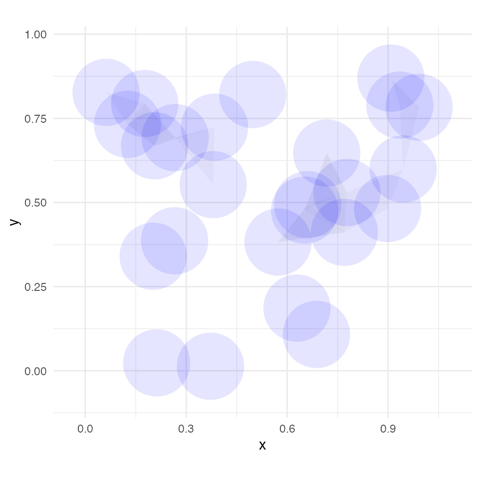
In addition to the Vietoris-Rips complex, ggtda permits visualization of the Čech complex with the stat_cech0 (identical to stat_vietoris0), stat_cech1 (identical to stat_vietoris1), and stat_cech2 (distinct from stat_vietoris2) functions. We plot an equilateral triangle using the stat_vietoris* functions and stat_cech* functions to showcase the difference. With a diameter of 1.1, the three points are all pairwise connected, but the three corresponding circles do not all share a single point of overlap (bottom left panel). Thus, while the Vietoris-Rips complex and the Čech complex share the same 1-skeleton, only the Vietoris-Rips complex has a face between the three points.
# create equilateral triangle point cloud eq_tri <- data.frame(x = c(0, 1, 0.5), y = c(0, 0, sqrt(3)/2)) diam <- 1.1 # top left panel: VR with stat_vietoris* ggplot(eq_tri, aes(x = x, y = y)) + coord_fixed() + stat_vietoris2(diameter = diam, fill = "darkgoldenrod", alpha = 0.1) + stat_vietoris1(diameter = diam, alpha = 0.25) + stat_vietoris0() + ggtitle("Vietoris-Rips complex") + theme_minimal() # top right panel: Čech with stat_cech* ggplot(eq_tri, aes(x = x, y = y)) + coord_fixed() + stat_cech2(diameter = diam, fill = "darkgoldenrod", alpha = 0.1) + stat_cech1(diameter = diam, alpha = 0.25) + stat_cech0() + ggtitle("Čech complex") + theme_minimal() # bottom left panel: equilateral triangle with stat_disk ggplot(eq_tri, aes(x = x, y = y)) + coord_fixed() + stat_disk(radius = diam / 2, fill = "blue", alpha = 0.1) + geom_point() + theme_minimal()
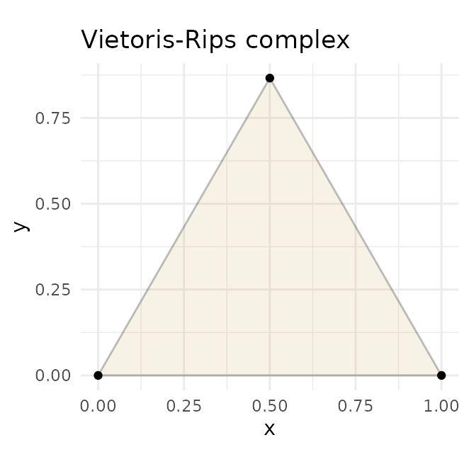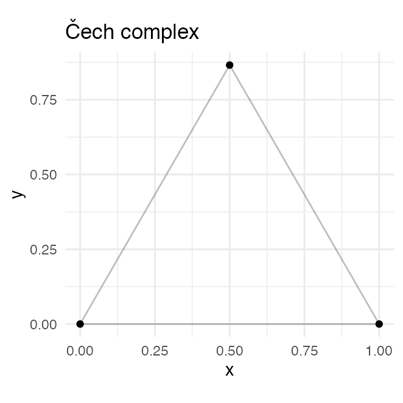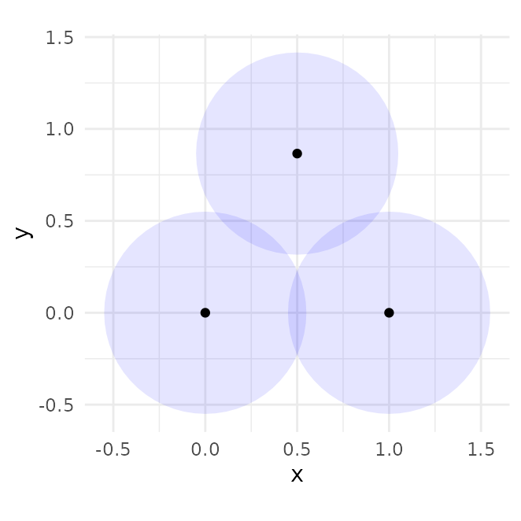
The annulus2d dataset contains 100 points noisily distributed around the circumference of a unit circle. We will calculate its persistent homology using the TDAstats package (following code block) and then plot the result with corresponding simplicial complices at various radii.
# calculate persistent homology of annulus annulus_phom <- as.data.frame(calculate_homology(annulus2d)) annulus_phom$dimension <- as.factor(annulus_phom$dimension) # plot topological barcode (left panel) ggplot(annulus_phom, aes(start = birth, end = death, group = dimension, colour = dimension)) + geom_barcode() + xlab("Simplicial complex diameter") + theme_barcode() # plot diagonal persistence diagram (right panel) ggplot(annulus_phom, aes(start = birth, end = death, shape = dimension, colour = dimension)) + stat_persistence(diagram = "diagonal") + geom_abline(slope = 1, intercept = 0) + xlim(c(0, 1.0)) + xlab("Feature appearance") + ylab("Feature disappearance") + coord_fixed() + theme_persist()
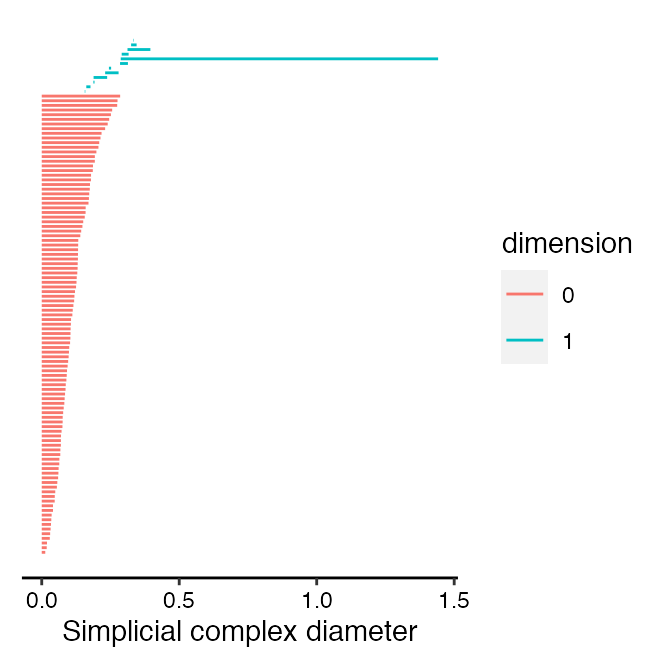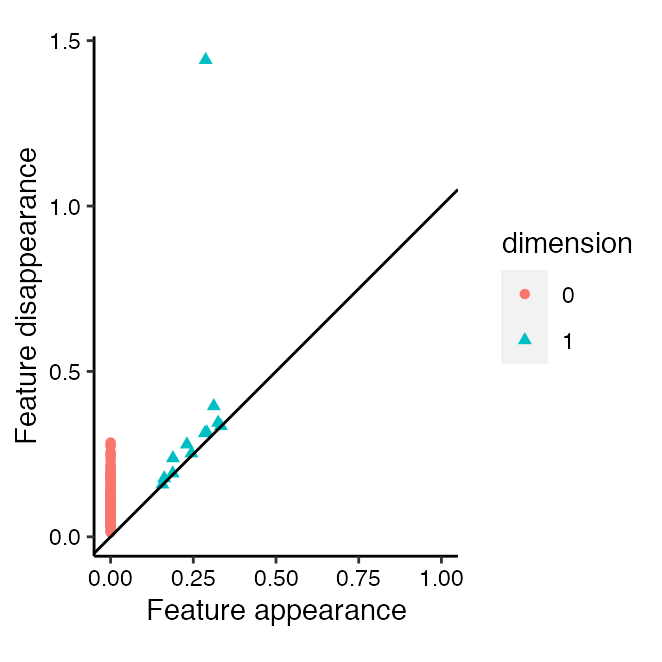
The dominant feature in annulus2d is a 1-dimensional loop that we identify in the following code block.
subset(annulus_phom, dimension == 1) #> dimension birth death #> 100 1 0.3333741 0.3350650 #> 101 1 0.3250107 0.3450117 #> 102 1 0.3119093 0.3951018 #> 103 1 0.2908068 0.3159732 #> 104 1 0.2872471 1.4415387 #> 105 1 0.2848001 0.3134504 #> 106 1 0.2443465 0.2523066 #> 107 1 0.2306282 0.2794531 #> 108 1 0.1885419 0.2378600 #> 109 1 0.1877741 0.1919384 #> 110 1 0.1620650 0.1772953 #> 111 1 0.1564191 0.1584211
The feature of interest persists the longest and is listed in row 104 of annulus_phom (starts at diameter of 0.29; ends at diameter of 1.44). Let’s explore simplicial complex visualization prior to the start of the dominant feature (diameter 0.25), during the presence of the dominant feature (diameter 0.75), and after the end of the dominant feature (diameter 1.5).
diam <- c(0.25, 0.75, 1.5) rads <- diam / 2
We use four panels to properly explore each diameter: (1) topological barcode with a vertical dotted line indicating diameter; (2) persistence diagram with horizontal and vertical lines, with points to the top-left of the intersection indicating current features; (3) simplicial complex visualization with stat_disk; and (4) simplicial complex visualization with stat_vietoris0, stat_vietoris1, and stat_vietoris2. First, we generate the visualization for a diameter of 0.25.
# topological barcode ggplot(annulus_phom, aes(start = birth, end = death, group = dimension, colour = dimension)) + geom_barcode() + geom_vline(xintercept = diam[1], linetype = "dashed") + xlab("Simplicial complex diameter") + labs(colour = "dim") + theme_barcode() + theme(legend.position = c(0.95, 0.5)) # persistence diagram ggplot(annulus_phom, aes(start = birth, end = death, shape = dimension, colour = dimension)) + stat_persistence(diagram = "diagonal") + geom_abline(slope = 1, intercept = 0) + xlim(c(0, 1.5)) + ylim(c(0, 1.5)) + xlab("Feature appearance") + ylab("Feature disappearance") + labs(colour = "dim", shape = "dim") + geom_vline(xintercept = diam[1], linetype = "dashed") + geom_hline(yintercept = diam[1], linetype = "dashed") + coord_fixed() + theme_persist() + theme(legend.position = c(0.95, 0.4)) # stat_disk ggplot(annulus_df, aes(x = x, y = y)) + geom_point() + coord_fixed() + stat_disk(radius = rads[1], fill = "blue", alpha = 0.1) + theme_minimal() # stat_vietoris* ggplot(annulus_df, aes(x = x, y = y)) + coord_fixed() + stat_vietoris2(diameter = diam[1], fill = "darkgoldenrod", alpha = 0.1) + stat_vietoris1(diameter = diam[1], alpha = 0.25) + stat_vietoris0() + theme_minimal()
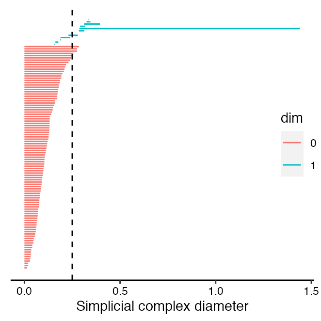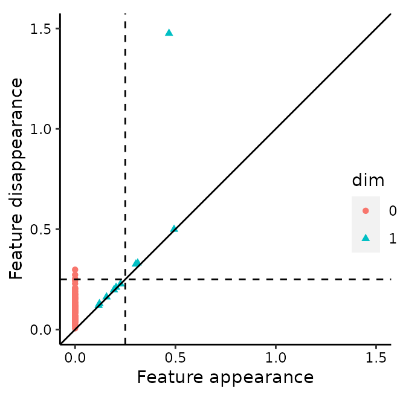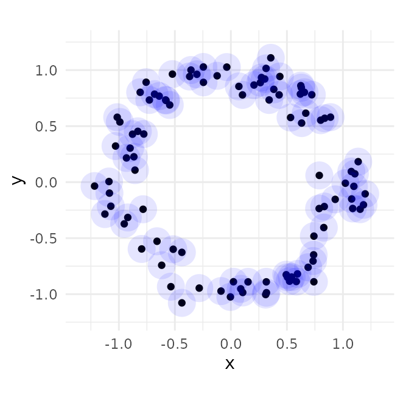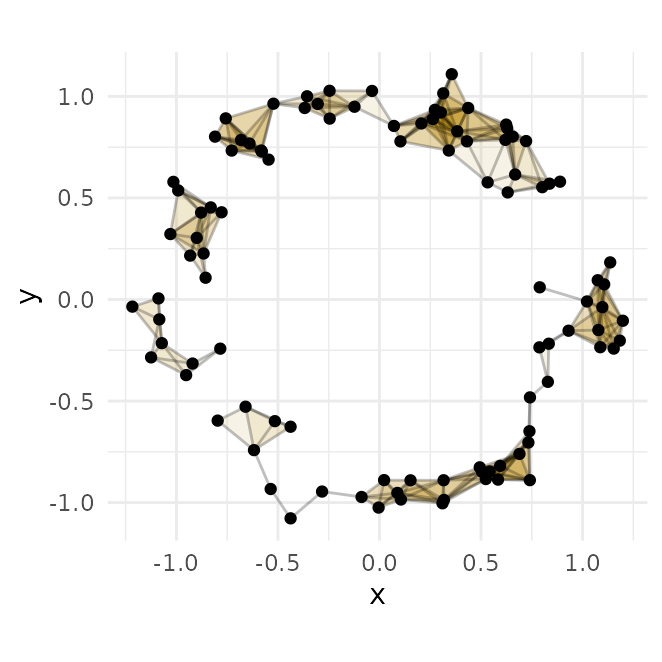
Interpretation at diameter 0.25:
stat_disk visualization (bottom-left panel):
stat_vietoris* visualization (bottom-right panel):
(0.0, -1.0))Each of the four panels complement one another by providing overlapping and consistent pieces of information with varying levels of clarity. Together, we get a good sense of what’s going on in annulus2d at a diameter of 0.25. Next, we look at diameter 0.75.
# topological barcode ggplot(annulus_phom, aes(start = birth, end = death, group = dimension, colour = dimension)) + geom_barcode() + geom_vline(xintercept = diam[2], linetype = "dashed") + xlab("Simplicial complex diameter") + labs(colour = "dim") + theme_barcode() + theme(legend.position = c(0.95, 0.5)) # persistence diagram ggplot(annulus_phom, aes(start = birth, end = death, shape = dimension, colour = dimension)) + stat_persistence(diagram = "diagonal") + geom_abline(slope = 1, intercept = 0) + xlim(c(0, 1.5)) + ylim(c(0, 1.5)) + xlab("Feature appearance") + ylab("Feature disappearance") + labs(colour = "dim", shape = "dim") + geom_vline(xintercept = diam[2], linetype = "dashed") + geom_hline(yintercept = diam[2], linetype = "dashed") + coord_fixed() + theme_persist() + theme(legend.position = c(0.95, 0.3)) # stat_disk ggplot(annulus_df, aes(x = x, y = y)) + geom_point() + coord_fixed() + stat_disk(radius = rads[2], fill = "blue", alpha = 0.05) + theme_minimal() # stat_vietoris* ggplot(annulus_df, aes(x = x, y = y)) + coord_fixed() + stat_vietoris2(diameter = diam[2], fill = "darkgoldenrod", alpha = 0.1) + stat_vietoris1(diameter = diam[2], alpha = 0.25) + stat_vietoris0() + theme_minimal()
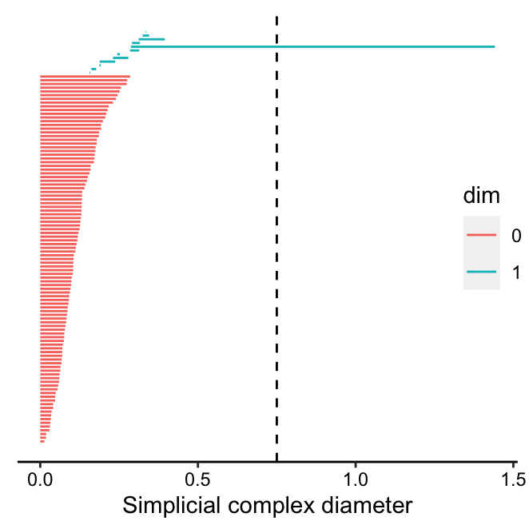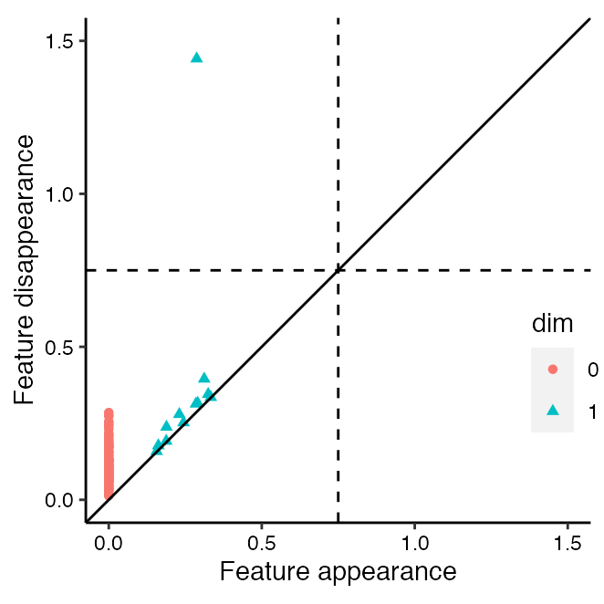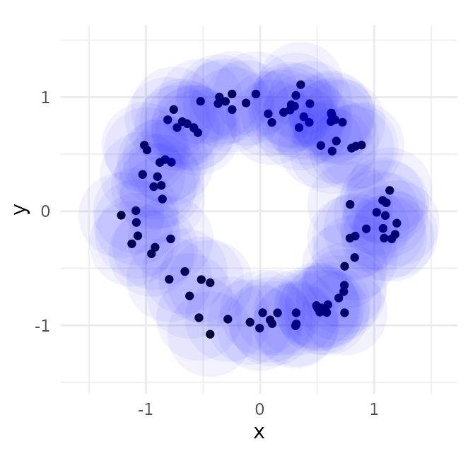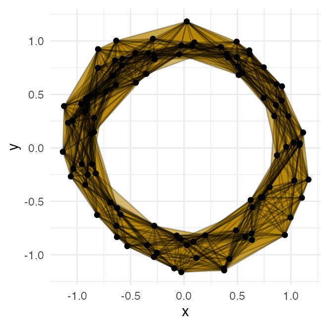
Interpretation at diameter 0.75:
stat_disk visualization:
stat_vietoris* visualization:
Lastly, we plot the four panels for diameter 1.5. We leave interpretation of these panels as an exercise to the reader.
# topological barcode ggplot(annulus_phom, aes(start = birth, end = death, group = dimension, colour = dimension)) + geom_barcode() + geom_vline(xintercept = diam[3], linetype = "dashed") + xlab("Simplicial complex diameter") + labs(colour = "dim") + theme_barcode() + theme(legend.position = c(0.85, 0.5)) # persistence diagram ggplot(annulus_phom, aes(start = birth, end = death, shape = dimension, colour = dimension)) + stat_persistence(diagram = "diagonal") + geom_abline(slope = 1, intercept = 0) + xlab("Feature appearance") + ylab("Feature disappearance") + labs(colour = "dim", shape = "dim") + geom_vline(xintercept = diam[3], linetype = "dashed") + geom_hline(yintercept = diam[3], linetype = "dashed") + coord_fixed() + theme_persist() + theme(legend.position = c(0.85, 0.4)) # stat_disk ggplot(annulus_df, aes(x = x, y = y)) + geom_point() + coord_fixed() + stat_disk(radius = rads[3], fill = "blue", alpha = 0.05) + theme_minimal() # stat_vietoris* ggplot(annulus_df, aes(x = x, y = y)) + coord_fixed() + stat_vietoris2(diameter = diam[3], fill = "darkgoldenrod", alpha = 0.1) + stat_vietoris1(diameter = diam[3], alpha = 0.25) + stat_vietoris0() + theme_minimal()
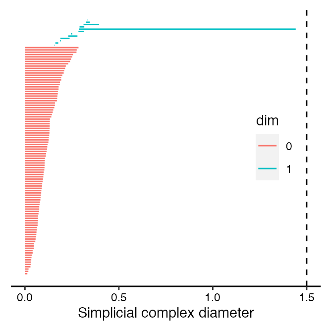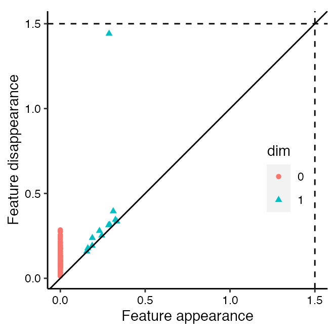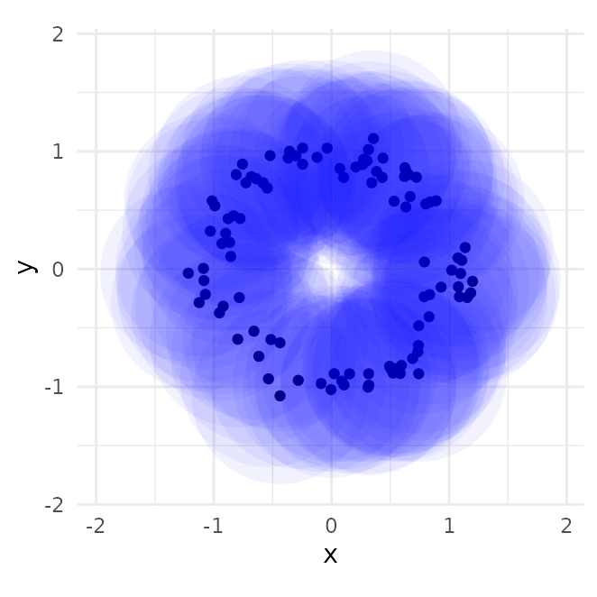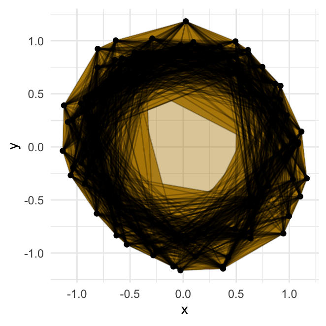